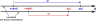
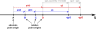
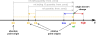

The Affine Space¶
The affine space has two types of entities:
- Point - a position specified with coordinate values (e.g., location, address, etc.)
- Displacement vector - the difference between two points (e.g., shift, offset, displacement, duration, etc.)
In the following subchapters, we will often refer to displacement vectors simply as vectors for brevity.
Note
The displacement vector described here is specific to the affine space theory and is not the same thing as the quantity of a vector character that we discussed in the "Scalars, vectors, and tensors" chapter (although, in some cases, those terms may overlap).
Operations in the affine space¶
Here are the primary operations one can do in the affine space:
- vector + vector -> vector
- vector - vector -> vector
- -vector -> vector
- vector * scalar -> vector
- scalar * vector -> vector
- vector / scalar -> vector
- point - point -> vector
- point + vector -> point
- vector + point -> point
- point - vector -> point
Important
It is not possible to:
- add two points,
- subtract a point from a vector,
- multiply nor divide points with anything else.
Points are more common than most of us imagine¶
Point abstractions should be used more often in the C++ software. They are not only about temperature or time. Points are everywhere around us and should become more popular in the products we implement. They can be used to implement:
- temperature points,
- timestamps,
- daily mass readouts from the scale,
- altitudes of mountain peaks on a map,
- current path length measured by the car's odometer,
- today's price of instruments on the market,
- and many more.
Improving the affine space's Points intuition will allow us to write better and safer software.
Displacement vector is modeled by quantity¶
Up until now, each time we used a quantity in our code, we were modeling some kind of a
difference between two things:
- the distance between two points,
- duration between two time points,
- the difference in speed (even if relative to zero).
As we already know, a quantity type provides all operations required for a
displacement vector abstraction in the affine space. It can be constructed with:
- the multiply syntax (works for most of the units),
delta<Reference>construction helper (e.g.,delta<isq::height[m]>(42),delta<deg_C>(3)),- two-parameter constructor taking a number and a quantity reference/unit.
Note
The multiply syntax support is disabled for units that provide a point origin in their
definition (i.e., units of temperature like K, deg_C, and deg_F).
Point is modeled by quantity_point and PointOrigin¶
In the mp-units library, the Point abstraction is modelled by:
PointOriginconcept that specifies measurement origin, andquantity_pointclass template that specifies a Point relative to a specific predefined origin.
quantity_point¶
The quantity_point class template specifies an absolute quantity measured from a predefined
origin:
template<Reference auto R,
PointOriginFor<get_quantity_spec(R)> auto PO = default_point_origin(R),
RepresentationOf<get_quantity_spec(R)> Rep = double>
class quantity_point;
As we can see above, the quantity_point class template exposes one additional parameter
compared to quantity. The PO parameter satisfies a
PointOriginFor concept and specifies the origin of our
measurement scale.
Each quantity_point internally stores a quantity object, which represents a
displacement vector from the predefined origin. Thanks to this, an instantiation of
a quantity_point can be considered as a model of a vector space from such an origin.
Forcing the user to manually predefine an origin for every domain may be cumbersome and
discourage users from using such abstractions at all. This is why, by default, the PO
template parameter is initialized with the default_point_origin(R) that provides the
quantity points' scale origin using the following rules:
- if the measurement unit of a quantity specifies its point origin in its definition (e.g., degree Celsius), then this origin is being used,
- otherwise, an instantiation of
natural_point_origin<QuantitySpec>is being used which provides a well-established natural origin for a specific quantity type.
Quantity points with default point origins may be constructed with the point construction
helper or forcing an explicit conversion from the quantity:
// quantity_point qp1 = 42 * m; // Compile-time error
// quantity_point qp2 = 42 * K; // Compile-time error
// quantity_point qp3 = delta<deg_C>(42); // Compile-time error
quantity_point qp4(42 * m);
quantity_point qp5(42 * K);
quantity_point qp6(delta<deg_C>(42));
quantity_point qp7 = point<m>(42);
quantity_point qp8 = point<K>(42);
quantity_point qp9 = point<deg_C>(42);
Tip
The quantity_point definition can be found in the mp-units/quantity_point.h header file.
natural_point_origin<QuantitySpec>¶
natural_point_origin<QuantitySpec> is meant to be used in cases where the specific
domain has a well-established, non-controversial, and unique natural origin on the
measurement scale. This saves the user from the need to write a boilerplate code that
would predefine such a type for this domain.
quantity_point<isq::distance[si::metre]> qp1(100 * m);
quantity_point<isq::distance[si::metre]> qp2 = point<m>(120);
assert(qp1.quantity_from_zero() == 100 * m);
assert(qp2.quantity_from_zero() == 120 * m);
assert(qp2.quantity_from(qp1) == 20 * m);
assert(qp1.quantity_from(qp2) == -20 * m);
assert(qp2 - qp1 == 20 * m);
assert(qp1 - qp2 == -20 * m);
// auto res = qp1 + qp2; // Compile-time error
In the above code 100 * m and 120 * m still create two quantities that serve as
displacement vectors here. Quantity point objects can be explicitly constructed from
such quantities only when their origin is an instantiation of the natural_point_origin<QuantitySpec>.
It is really important to understand that even though we can use .quantity_from_zero()
to obtain the displacement vector of a point from its default origin, the point by itself
does not represent or have any associated physical value. It is just a point in some space.
The same point can be expressed with different displacement vectors from different origins.
It is also worth mentioning that simplicity comes with a safety cost here. For some users,
it might be surprising that the usage of natural_point_origin<QuantitySpec> makes various
quantity point objects compatible as long as quantity types used in the origin and reference
are compatible:
quantity_point<si::metre> qp1{isq::distance(100 * m)};
quantity_point<si::metre> qp2 = point<isq::height[m]>(120);
assert(qp2.quantity_from(qp1) == 20 * m);
assert(qp1.quantity_from(qp2) == -20 * m);
assert(qp2 - qp1 == 20 * m);
assert(qp1 - qp2 == -20 * m);
Quantity types and points¶
Quantity types combine differently depending on whether we operate on vectors or points.
For vectors, mixing sibling quantity types widens the result to their nearest common ancestor, exactly as required by ISO 80000:
For points, the rules are stricter, because a point carries information a vector does not: the axis it lives on. A vector is free. It can be reinterpreted along any direction, so combining a vertical and a horizontal displacement into a plain length is meaningful. A point is bound to its axis. A point of height lives on a vertical axis and a point of width on a horizontal one. Forcing them onto a common length axis would strip away the very information that makes a point subtractable and comparable. Two rules follow from this.
A point keeps its own quantity type. Offsetting a point by a vector always yields a point of the point's quantity type, and the vector must be implicitly convertible to that type:
quantity_point h = point<isq::height[m]>(100);
quantity_point h1 = h + isq::height(2 * m); // quantity_point<isq::height[m]>
quantity_point h2 = h + 2 * m; // quantity_point<isq::height[m]>
// quantity_point bad1 = h + isq::width(2 * m); // Compile-time error
// quantity_point bad2 = h + isq::length(2 * m); // Compile-time error
The raw 2 * m works because it is a quantity of kind kind_of<isq::length> ("any
length"), which is convertible to any specific length including height. The specific
isq::width(2 * m) and isq::length(2 * m) do not convert to height, so they are
rejected. This is the opposite of the vector + vector case above, where the result
widens instead of staying fixed to the point's type.
Two points combine only when they share the same space. For natural_point_origin,
two points share a space exactly when their quantity types are interconvertible. A kind
("any length", the type of 1 * m or of a quantity_point<si::metre>) is interconvertible
with every length child, so it mixes with all of them, as shown in the previous example. Two
distinct named children such as height and width are not interconvertible, and neither
is the generic isq::length with any specific child. Each of those gets its own natural
axis, so their points do not subtract, compare, or convert:
quantity_point height = point<isq::height[m]>(1);
quantity_point width = point<isq::width[m]>(1);
quantity_point length = point<isq::length[m]>(1);
// quantity d1 = height - width; // Compile-time error: distinct natural axes
// quantity d2 = height - length; // Compile-time error: distinct natural axes
Absolute point origin¶
In cases where we want to implement an isolated independent space in which points are not compatible with other spaces, even of the same quantity type, we should manually predefine an absolute point origin.
inline constexpr struct origin : absolute_point_origin<isq::distance> {} origin;
// quantity_point<si::metre, origin> qp1{100 * m}; // Compile-time error
// quantity_point<si::metre, origin> qp2{delta<m>(120)}; // Compile-time error
quantity_point<si::metre, origin> qp1 = origin + 100 * m;
quantity_point<si::metre, origin> qp2 = 120 * m + origin;
// assert(qp1.quantity_from_zero() == 100 * m); // Compile-time error
// assert(qp2.quantity_from_zero() == 120 * m); // Compile-time error
assert(qp1.quantity_from(origin) == 100 * m);
assert(qp2.quantity_from(origin) == 120 * m);
assert(qp2.quantity_from(qp1) == 20 * m);
assert(qp1.quantity_from(qp2) == -20 * m);
assert(qp1 - origin == 100 * m);
assert(qp2 - origin == 120 * m);
assert(qp2 - qp1 == 20 * m);
assert(qp1 - qp2 == -20 * m);
assert(origin - qp1 == -100 * m);
assert(origin - qp2 == -120 * m);
// assert(origin - origin == 0 * m); // Compile-time error
We can't construct a quantity point directly from the quantity anymore when a custom, named origin is used. To prevent potential safety and maintenance issues, we always need to explicitly provide both a compatible origin and a quantity measured from it to construct a quantity point.
Said otherwise, a quantity point defined in terms of a specific origin is the result of adding the origin and the displacement vector measured from it to the point we create.
Info
A rationale for this longer construction syntax can be found in the Why can't I create a quantity by passing a number to a constructor? chapter.
Similarly to creation of a quantity, if
someone does not like the operator-based syntax to create a quantity_point, the same
results can be achieved with a two-parameter constructor:
Again, CTAD always helps to use precisely the type we need in a current case.
Additionally, if a quantity point is defined in terms of a custom, named origin, then we
can't use a quantity_from_zero() member function anymore. This is to prevent surprises,
as our origin may not necessarily be perceived as an absolute zero in the domain we model.
Also, as we will learn soon, we can define several related origins in one space, and then
it gets harder to understand which one is the zero one. This is why, to be specific and
always correct about the points we use, a quantity_from(QP) member function can be used
(where QP can either be an origin or another quantity point).
Finally, please note that it is not allowed to subtract two point origins defined in terms
of absolute_point_origin (e.g., origin - origin) as those do not contain information
about the unit, so we cannot determine a resulting quantity type.
Modeling independent spaces in one domain¶
Absolute point origins are also perfect for establishing independent spaces even if the same quantity type and unit is being used:

inline constexpr struct origin1 : absolute_point_origin<isq::distance> {} origin1;
inline constexpr struct origin2 : absolute_point_origin<isq::distance> {} origin2;
quantity_point qp1 = origin1 + 100 * m;
quantity_point qp2 = origin2 + 120 * m;
assert(qp1.quantity_from(origin1) == 100 * m);
assert(qp2.quantity_from(origin2) == 120 * m);
assert(qp1 - origin1 == 100 * m);
assert(qp2 - origin2 == 120 * m);
assert(origin1 - qp1 == -100 * m);
assert(origin2 - qp2 == -120 * m);
// assert(qp2 - qp1 == 20 * m); // Compile-time error
// assert(qp1 - origin2 == 100 * m); // Compile-time error
// assert(qp2 - origin1 == 120 * m); // Compile-time error
// assert(qp2.quantity_from(qp1) == 20 * m); // Compile-time error
// assert(qp1.quantity_from(origin2) == 100 * m); // Compile-time error
// assert(qp2.quantity_from(origin1) == 120 * m); // Compile-time error
Relative Point origin¶
We often do not have only one ultimate "zero" point when we measure things. Often, we have one common scale, but we measure various quantities relative to different points and expect those points to be compatible. There are many examples here, but probably the most common are temperatures, timestamps, and altitudes.
For such cases, relative point origins should be used:

inline constexpr struct A : absolute_point_origin<isq::distance> {} A;
inline constexpr struct B : relative_point_origin<A + 10 * m> {} B;
inline constexpr struct C : relative_point_origin<B + 10 * m> {} C;
inline constexpr struct D : relative_point_origin<A + 30 * m> {} D;
quantity_point qp1 = C + 100 * m;
quantity_point qp2 = D + 120 * m;
assert(qp1.quantity_ref_from(qp1.point_origin) == 100 * m);
assert(qp2.quantity_ref_from(qp2.point_origin) == 120 * m);
assert(qp2.quantity_from(qp1) == 30 * m);
assert(qp1.quantity_from(qp2) == -30 * m);
assert(qp2 - qp1 == 30 * m);
assert(qp1 - qp2 == -30 * m);
assert(qp1.quantity_from(A) == 120 * m);
assert(qp1.quantity_from(B) == 110 * m);
assert(qp1.quantity_from(C) == 100 * m);
assert(qp1.quantity_from(D) == 90 * m);
assert(qp1 - A == 120 * m);
assert(qp1 - B == 110 * m);
assert(qp1 - C == 100 * m);
assert(qp1 - D == 90 * m);
assert(qp2.quantity_from(A) == 150 * m);
assert(qp2.quantity_from(B) == 140 * m);
assert(qp2.quantity_from(C) == 130 * m);
assert(qp2.quantity_from(D) == 120 * m);
assert(qp2 - A == 150 * m);
assert(qp2 - B == 140 * m);
assert(qp2 - C == 130 * m);
assert(qp2 - D == 120 * m);
assert(B - A == 10 * m);
assert(C - A == 20 * m);
assert(D - A == 30 * m);
assert(D - C == 10 * m);
assert(B - B == 0 * m);
// assert(A - A == 0 * m); // Compile-time error
Note
Even though we can't subtract two absolute point origins from each other, it is possible to subtract relative ones or relative and absolute ones.
Converting between different representations of the same point¶
As we might represent the same point with displacement vectors from various origins, the
library provides facilities to convert the same point to the quantity_point class templates
expressed in terms of different origins.
For this purpose, we can use either:
-
A converting constructor:
-
A dedicated conversion interface:
It is important to understand that all such translations still describe exactly the same point (e.g., all of them compare equal):
Important
Between origins sharing the same absolute_point_origin root, the converting constructor
may be implicit (when the quantity types are safely convertible). To convert across two
independent absolute_point_origin types, a frame projection must be
registered first. The constructor then works but is always explicit
(no runtime arguments; use .point_for(origin, args...) when extra data is needed):
Frame projections between independent origins¶
relative_point_origin handles compile-time offsets within a single origin tree. Some
conversions cannot be expressed that way:
- Axis-inverting transformations — altitude ↔ depth: the physical magnitude is the same
but the axis direction flips (
depth = −altitude). - Formula-based conversions — geometric azimuth ↔ bearing:
bearing = 90° − azimuthinvolves negation, which is not a pure offset. - Runtime-parameter conversions — world frame ↔ camera frame: the transformation depends on calibration data that is not known at compile time.
The frame_projection customization point bridges pairs of absolute_point_origin values
with user-supplied callables. The primary template is intentionally left as undefined,
so that the library can detect whether a user specialization exists for a given pair:
| Property | relative_point_origin |
frame_projection |
|---|---|---|
| Transformation location | Compile time (NTTP) | Runtime (callable specialization) |
| Rep-type requirement | Structural type | No restriction |
| Automatic inverse | Yes | No — both directions must be explicit |
| Compile-time chain discovery | Yes (origin-tree walk) | No — only direct pairs connected |
| Runtime parameters | No | Yes — extra point_for args forwarded to the functor |
| Suitable for | Celsius↔Kelvin, epoch shifts | Axis inversions, camera calibration |
Defining a projection¶
Specialize frame_projection for each (From, To) pair. The specialization must be a
callable invocable as:
inline constexpr struct sea_level : absolute_point_origin<isq::altitude> {} sea_level;
inline constexpr struct ocean_surface : absolute_point_origin<isq::altitude> {} ocean_surface;
template<>
inline constexpr auto mp_units::frame_projection<sea_level, ocean_surface> =
[](QuantityPointOf<isq::altitude> auto qp) {
return ocean_surface - qp.quantity_from(sea_level);
};
// The inverse must be provided explicitly — the library never derives it automatically:
template<>
inline constexpr auto mp_units::frame_projection<ocean_surface, sea_level> =
[](QuantityPointOf<isq::altitude> auto qp) {
return sea_level - qp.quantity_from(ocean_surface);
};
Using point_for with a frame projection¶
Call point_for exactly as you would for same-origin conversions:
quantity_point altitude = sea_level + (-100. * m); // 100 m below sea level
quantity_point depth = altitude.point_for(ocean_surface); // depth = 100 m (positive downward)
quantity_point alt2 = depth.point_for(sea_level); // altitude = −100 m
If the requested origin is a relative_point_origin whose absolute root can be reached via
a frame_projection, the library first projects to that absolute root and then walks down
the origin tree automatically:
// shallow_water is defined 10 m "below" ocean_surface in the depth frame
inline constexpr struct shallow_water :
relative_point_origin<ocean_surface + 10. * isq::height[m]> {} shallow_water;
quantity_point from_shallow = altitude.point_for(shallow_water);
// Steps: sea_level → ocean_surface (depth 100 m), walk-down: 100 − 10 = 90 m from shallow_water
Explicit constructor as an alternative¶
When no runtime arguments are needed, the explicit quantity_point constructor is a compact
alternative to point_for — useful when you are already spelling out the destination type:
quantity_point<isq::altitude[m], ocean_surface> depth{altitude};
// equivalent to: altitude.point_for(ocean_surface)
The constructor invokes the same registered frame_projection internally. It is always
explicit — implicit conversion across independent origins is never permitted.
Use .point_for() when extra runtime arguments must be forwarded to the projection functor
(see below), or when you prefer to let the compiler deduce the destination type.
Runtime arguments¶
Any extra arguments passed to point_for are forwarded to the projection functor, enabling
runtime-parameter-dependent transformations:
struct CameraCalibration { double R[3][3]; double t[3]; };
template<>
inline constexpr auto mp_units::frame_projection<world_frame, camera_frame> =
[](QuantityPointOf<isq::length> auto qp, const CameraCalibration& cal) {
return camera_frame + forward_transform(cal, qp.quantity_from(world_frame));
};
// Different call sites supply different calibrations — no global state required:
CameraCalibration cal = load_calibration("cam.json");
quantity_point cam_pt = world_pt.point_for(camera_frame, cal);
Important
- Both directions must be explicit. The library never derives an inverse automatically.
- Chain walks within a frame are automatic. Projecting to an
absolute_point_originwhose tree contains the requestedrelative_point_origintriggers the compile-time walk-down insidepoint_for. - Chains do not cross frame boundaries. Only direct
(From, To)specializations are considered; multi-hop projections must be composed by the caller.
Range-Validated Quantity Points¶
Background reading
For a deeper discussion of the motivation, design trade-offs, and open questions, see the blog article Range-Validated Quantity Points.
In many domains, quantity points must stay within specific bounds. For example:
- Geographic coordinates: latitude ∈ [-90°, 90°], longitude ∈ [-180°, 180°)
- Temperature sensors: operating range [−40°C, 85°C]
- Control systems: valid input range [0, 100] units
The library provides four overflow policies that can be passed as template parameters to point origins. These policies enforce bounds during construction, unit conversion, and arithmetic operations.
Production Use Case: Geographic Coordinate Systems
This feature was specifically designed to support production requirements for geographic/navigation systems, where different angle types require different wrapping behaviors:
- Latitude (symmetric): reflects at ±90° boundaries (can't go past poles)
- Longitude (mirrored): wraps circularly at -180° to +180°
- Elevation (symmetric): reflects at ±90° like latitude
- Geometric Azimuth (mirrored): 0° = East, counter-clockwise, wraps [-180°, 180°)
- Heading (mirrored): 0° = North, counter-clockwise, wraps [-180°, 180°)
- Conversion:
heading = geometric_azimuth - 90°(simple offset) - Uses
relative_point_origin<east + delta<geometric_azimuth[degree]>(-90.)>
- Conversion:
- Bearing (mirrored): 0° = North, clockwise, wraps [-180°, 180°)
- Conversion:
bearing = 90° - geometric_azimuth(involves negation) - Cannot use
relative_point_origin(requires separateabsolute_point_origin) - Use
frame_projection<north_cw, east>/frame_projection<east, north_cw>— see Frame projections between independent origins
- Conversion:
These requirements came from companies working with coordinate reference systems (CRS), navigation, and geodesy. See the complete discussion in GitHub #782.
Key Insight: relative_point_origin can only model offset transformations (addition/subtraction).
Transformations involving negation or sign flips (like bearing ↔ azimuth) require
separate absolute_point_origin types connected via frame_projection. This ensures
type safety while allowing the framework to handle coordinate transformations automatically.
Type Safety with is_kind: All geographic quantity specs use is_kind to prevent
accidental mixing of different angle types (e.g., latitude + longitude, bearing + heading).
This requires explicit conversion when using trigonometric functions:
// Convert to plain angular_measure for trig functions
const quantity<angular_measure> lat_angle = isq::angular_measure(lat.quantity_from(geographic::equator));
const quantity result = sin(lat_angle); // Works with angular_measure
The current framework handles all wrapping schemes and coordinate transformations expressible
as offsets. Advanced geodetic calculations (ellipsoid parameters, distance formulas for WGS84,
etc.) require additional domain-specific extensions beyond the core library. For a complete
working example, see geographic.h
and the UAV: Multiple Altitude Reference Systems
example, which demonstrates multiple point origins, bounds checking policies, overflow handling,
and coordinate reference conversions.
Available Overflow Policies¶
| Policy | Behavior | Error Handling | Use Case |
|---|---|---|---|
check_in_range |
Reports violation via constraint_violation_handler or MP_UNITS_EXPECTS |
Depends on rep type | Bounds checking with customizable error behavior |
clamp_to_range |
Clamps to nearest boundary: clamp(value, min, max) |
Silent correction | Saturating arithmetic, sensor limits, UI controls |
wrap_to_range |
Wraps circularly to [min, max): modulo arithmetic |
Value transformation | Periodic quantities (angles, time-of-day, longitude) |
reflect_in_range |
Reflects at boundaries (like a bouncing ball) | Value transformation | Geographic elevation angle, physical boundaries |
check_non_negative |
Reports violation if value < 0 |
Depends on rep type | Inherently non-negative quantities (length, mass) |
clamp_non_negative |
Clamps negative values to zero | Silent correction | FP rounding noise in non-negative domains |
Important
The four bounded-range policies (check_in_range, clamp_to_range, wrap_to_range,
reflect_in_range) expose public min and max data members, enabling std::numeric_limits
specializations to reflect the constrained bounds. check_non_negative and
clamp_non_negative are halfline policies with no upper bound and therefore do not
expose max. See the std::numeric_limits note below for details.
Error behavior of check_in_range
check_in_range delegates error reporting to the representation type:
- If the rep has a
constraint_violation_handlerspecialization (e.g.constrained<double, throw_policy>), the handler'son_violation()is called, providing guaranteed enforcement regardless of build mode. - Otherwise, falls back to
MP_UNITS_EXPECTS, which may be disabled in release builds.
See Tutorial: Custom Contract Handlers
for a step-by-step guide to implementing custom error policies, or
How to: Ensure Ultimate Safety for a
complete example of combining check_in_range with constrained rep types.
Example Usage¶
// Define quantity specifications and origins
inline constexpr struct geo_latitude : quantity_spec<isq::angular_measure> {} geo_latitude;
inline constexpr struct geo_longitude : quantity_spec<isq::angular_measure> {} geo_longitude;
inline constexpr struct equator :
absolute_point_origin<geo_latitude, reflect_in_range{-90 * si::degree, 90 * si::degree}> {} equator;
inline constexpr struct prime_meridian :
absolute_point_origin<geo_longitude, wrap_to_range{-180 * si::degree, 180 * si::degree}> {} prime_meridian;
// Define bounded quantity point types
template<typename T = double> using latitude = quantity_point<si::degree, equator, T>;
template<typename T = double> using longitude = quantity_point<si::degree, prime_meridian, T>;
void example()
{
latitude lat = equator + 45.0 * deg; // Valid: within [-90, 90]
lat = equator + 95.0 * deg; // Reflects to 85° (reflect_in_range mirrors at boundary)
longitude lon = prime_meridian + 270.0 * deg; // Wraps to -90° (wrap_to_range treats range as circular)
lon += 200.0 * deg; // Result wraps: -90 + 200 = 110°
}
Simplified
True geodetic latitude reflection also requires shifting longitude by 180° (crossing a pole puts you on the opposite side of the globe).
How It Works¶
Bounds are enforced at these points:
- Construction from a quantity:
quantity_point{value * unit, origin} - Unit conversion:
qp.in(other_unit),qp.in(other_unit, policy) - Arithmetic operations:
operator+=,operator-=,operator++,operator-- - Origin conversion:
qp.point_for(new_origin)
After each mutation the library transparently applies the bounds policy specified on the origin.
Origin Inheritance¶
A relative_point_origin that defines no own bounds automatically inherits the parent
origin's enforcement. Bounds translate through the chain at compile time — the relative
value is translated to the owning ancestor's frame, the policy is applied there, and the
result is translated back:
inline constexpr struct sea_level :
absolute_point_origin<isq::altitude, clamp_to_range{-500 * m, 12'000 * m}> {} sea_level;
// Relative origin — no own bounds; inherits clamping from sea_level.
inline constexpr struct airport_elevation :
relative_point_origin<sea_level + 200 * m> {} airport_elevation;
// 11'900 m above airport = 12'100 m MSL → exceeds 12'000 m cap → clamped to 11'800 m from airport.
quantity_point takeoff = airport_elevation + 11'900.0 * m;
This applies to all bound policies — including the check_non_negative bounds that are
automatically attached to natural_point_origin of a non-negative quantity spec. A relative
origin above the ground floor may therefore hold negative values, as long as the absolute
position stays ≥ 0:
inline constexpr struct height_spec : quantity_spec<isq::height> {} height_spec;
// natural_point_origin<height_spec> auto-gets check_non_negative (isq::height is non_negative).
inline constexpr struct average_height_origin :
relative_point_origin<natural_point_origin<height_spec> + 1700.0 * m> {} average_height_origin;
// −1500 m relative = 200 m absolute (≥ 0) → valid, unchanged.
quantity_point low = average_height_origin - 1500.0 * m;
// −1701 m relative = −1 m absolute → check_non_negative fires.
// quantity_point bad = average_height_origin - 1701.0 * m; // ❌
When a relative_point_origin defines its own bounds, they are additionally checked at
compile time to nest within the parent's bounds (see the Hierarchical bounds validation
note in the Custom Policies section below).
std::numeric_limits integration
When a quantity_point has a bounds policy on its origin, the
std::numeric_limits specialization automatically reflects the constrained bounds:
// prime_meridian defined with wrap_to_range{-180 * deg, 180 * deg}
using longitude = quantity_point<geo_longitude[deg], prime_meridian>;
quantity lon_min = std::numeric_limits<longitude>::min(); // prime_meridian - 180°
quantity lon_max = std::numeric_limits<longitude>::max(); // prime_meridian + 180°
This works because the policy struct exposes public min and max data members, which
quantity_point::min() and max() access to provide meaningful bounds. Without a
bounds policy, std::numeric_limits delegates to the representation type's limits.
Custom Policies (One-Sided Bounds)¶
The library ships two built-in one-sided halfline policies for [0, +∞) domains:
check_non_negative (reports a violation when the value is negative) and
clamp_non_negative (silently clamps negative values to zero). These are automatically
applied to any quantity_point whose origin is a natural_point_origin of a non-negative
quantity spec (such as isq::length, isq::mass, or isq::duration).
For other one-sided constraints, you can create a fully custom policy:
template<Quantity Q>
struct clamp_bottom {
Q min; // Public member enables std::numeric_limits support
template<Quantity V>
constexpr V operator()(V v) const { return v < min ? min : v; }
};
// Usage: hydraulic system with minimum operating pressure
inline constexpr struct atmospheric_pressure :
absolute_point_origin<isq::pressure, clamp_bottom{1000 * si::kilo<si::pascal>}> {} atmospheric_pressure;
using hydraulic_pressure = quantity_point<si::kilo<si::pascal>, atmospheric_pressure>;
hydraulic_pressure p1 = atmospheric_pressure + 2000 * kPa; // OK: 2000 kPa
hydraulic_pressure p2 = atmospheric_pressure + 500 * kPa; // Clamped to 1000 kPa (min operating pressure)
Hierarchical bounds validation
When a relative_point_origin defines bounds and its parent origin also has bounds, the
library enforces at compile time that the child's bounds fit within the parent's bounds
(after translating to the parent's reference frame).
This hierarchical validation ensures semantic correctness: if you model origin B as
relative to origin A, and A has operational constraints, then B inheriting those
constraints is physically and logically appropriate (e.g., a room's temperature range
shouldn't exceed the building HVAC system's capability, a drone's altitude above launch
point shouldn't exceed airspace authorization limits).
Absolute origin bounds represent physical constraints (e.g., temperature can't go below absolute zero) and are always enforced—this is non-negotiable.
Relative origin bounds hierarchical enforcement represents our current design decision based on typical use cases. If you encounter scenarios where nested relative origins need independent bounds (not constrained by their parent), please share your feedback so we can evaluate adding opt-in flexibility.
Implementation reference
See geographic.h
and overflow_policies.h
for complete examples.
Temperature support¶
Support for temperature quantity points is probably one of the most common examples of relative point origins in action that we use in daily life.
The SI definition in the library provides a few predefined point origins for this purpose:
namespace si {
inline constexpr struct absolute_zero : absolute_point_origin<isq::thermodynamic_temperature> {} absolute_zero;
inline constexpr struct ice_point : relative_point_origin<point<milli<kelvin>>(273'150)}> {} ice_point;
}
namespace usc {
inline constexpr struct fahrenheit_zero :
relative_point_origin<point<mag_ratio<5, 9> * si::degree_Celsius>(-32)> {} fahrenheit_zero;
}
The above is a great example of how point origins can be stacked on top of each other:
usc::fahrenheit_zerois defined relative tosi::ice_pointsi::ice_pointis defined relative tosi::absolute_zero.
Note
Notice that while stacking point origins, we can use different representation types and units
for origins and a point. In the above example, the relative point origin for degree Celsius
is defined in terms of si::kelvin, while the quantity point for it will use
si::degree_Celsius as a unit.
The temperature point origins defined above are provided explicitly in the respective units' definitions:
namespace si {
inline constexpr struct kelvin :
named_unit<"K", kind_of<isq::thermodynamic_temperature>, absolute_zero> {} kelvin;
inline constexpr struct degree_Celsius :
named_unit<{u8"℃", "`C"}, kelvin, ice_point> {} degree_Celsius;
}
namespace usc {
inline constexpr struct degree_Fahrenheit :
named_unit<{u8"℉", "`F"}, mag_ratio<5, 9> * si::degree_Celsius,
fahrenheit_zero> {} degree_Fahrenheit;
}
As it was described above, default_point_origin(R) returns a natural_point_origin<QuantitySpec>
when a unit does not provide any origin in its definition. As of today, the units of temperature
are the only ones in the entire mp-units library that provide such origins.
Now, let's see how we can benefit from the above definitions. We have quite a few alternatives to choose from here. Depending on our needs or tastes, we can:
-
be explicit about the unit and origin:
quantity_point<si::degree_Celsius, si::ice_point> q1 = si::ice_point + delta<deg_C>(20.5); quantity_point<si::degree_Celsius, si::ice_point> q2{delta<deg_C>(20.5), si::ice_point}; quantity_point<si::degree_Celsius, si::ice_point> q3{delta<deg_C>(20.5)}; quantity_point<si::degree_Celsius, si::ice_point> q4 = point<deg_C>(20.5); -
specify a unit and use its point origin implicitly:
-
benefit from CTAD:
In all of the above cases, we end up with the quantity_point of the same type and value.
To play a bit more with temperatures, we can implement a simple room AC temperature controller in the following way:

Now that the Range-Validated Quantity Points infrastructure is available, we can attach
a clamp_to_range policy so the controller silently enforces the comfort band:
constexpr struct room_reference_temp :
relative_point_origin<point<deg_C>(21), clamp_to_range{delta<deg_C>(-3), delta<deg_C>(3)}> {} room_reference_temp;
using room_temp = quantity_point<deg_C, room_reference_temp>;
constexpr auto step_delta = delta<deg_C>(0.5);
constexpr int number_of_steps = 6;
room_temp room_ref{};
room_temp room_low = room_ref - number_of_steps * step_delta; // −3 °C: exactly at lower bound
room_temp room_high = room_ref + number_of_steps * step_delta; // +3 °C: exactly at upper bound
// Any attempt to exceed the ±3 °C comfort range is silently clamped
room_temp clamped = room_ref + delta<deg_C>(10.0); // → auto-clamped to +3 °C from reference
std::println("Room reference temperature: {} ({}, {::N[.2f]})\n",
room_ref,
room_ref.in(usc::degree_Fahrenheit),
room_ref.in(si::kelvin));
std::println("| {:<18} | {:^18} | {:^18} | {:^18} |",
"Temperature delta", "Room reference", "Ice point", "Absolute zero");
std::println("|{0:=^20}|{0:=^20}|{0:=^20}|{0:=^20}|", "");
auto print_temp = [&](std::string_view label, auto v) {
std::println("| {:<18} | {:^18} | {:^18} | {:^18:N[.2f]} |", label,
v - room_reference_temp, (v - si::ice_point).in(deg_C), (v - si::absolute_zero).in(deg_C));
};
print_temp("Lowest", room_low);
print_temp("Default", room_ref);
print_temp("Highest", room_high);
print_temp("Clamped to max", clamped);
The above prints:
Room reference temperature: 21 ℃ (69.8 ℉, 294.15 K)
| Temperature delta | Room reference | Ice point | Absolute zero |
|====================|====================|====================|====================|
| Lowest | -3 ℃ | 18 ℃ | 291.15 ℃ |
| Default | 0 ℃ | 21 ℃ | 294.15 ℃ |
| Highest | 3 ℃ | 24 ℃ | 297.15 ℃ |
| Clamped to max | 3 ℃ | 24 ℃ | 297.15 ℃ |
Text output for Points¶
Text output is supported for quantity_point when its point origin equals
default_point_origin(R) — the library-chosen default for the given reference.
-
For references without an offset unit (e.g.,
quantity_point<isq::length[m]>),default_point_originisnatural_point_origin<QuantitySpec>, which represents the mathematical zero. The stored quantity is unambiguous: -
For references whose unit carries a built-in origin (e.g.,
quantity_point<deg_C>),default_point_originis the unit's canonical reference point (si::ice_point). The output matches the conventional notation:
Text output is not provided when a non-default origin is used, for example:
inline constexpr struct sea_level : absolute_point_origin<isq::altitude> {} sea_level;
quantity_point<isq::altitude[m], sea_level> altitude = sea_level + 42 * m;
std::cout << altitude; // ❌ — does not compile
The stored quantity is a displacement from a domain-specific reference whose name the library cannot know. The same numeric value can describe entirely different physical locations depending on the choice of origin — "42 m" above sea level, a mountain top, or the centre of Mars are all distinct points. Providing a meaningful text representation would require origin-aware formatting that is beyond what the library can infer from the type alone.
To print such a point, extract the displacement from a known origin explicitly and add the appropriate label so the value is unambiguous:
Extracting a raw numerical value from a Point¶
At the boundary of our program (serialization, hardware registers, a user interface) we often
need the plain number stored in a point. For a point that uses default_point_origin(R),
the numerical_value_in(Unit) member function returns that value directly. It is the exact
inverse of the point<Unit>(value) helper and reads the point on the scale of the requested
unit, re-anchoring across offset units when needed:
quantity_point temp = point<deg_C>(20.5);
double celsius = temp.numerical_value_in(deg_C); // 20.5
double kelvin = temp.numerical_value_in(K); // 293.65 (measured from absolute zero)
A truncating variant, numerical_value_in(Unit, policy), is provided for conversions
that would otherwise be rejected as value-preserving (e.g., an integer representation
scaled to a coarser unit).
Both member functions are available under exactly the same condition as
text output: only when the point uses default_point_origin(R).
A point with a custom origin has no unique numerical representation, so its value must be
requested from an explicit origin instead:
The affine space is about type-safety¶
The following operations are not allowed in the affine space:
- adding two
quantity_pointobjects- It is physically impossible to add positions of home and Denver airports.
- subtracting a
quantity_pointfrom aquantity- What would it mean to subtract the DEN airport location from the distance to it?
- multiplying/dividing a
quantity_pointwith a scalar- What is the position of
2 *DEN airport location?
- What is the position of
- multiplying/dividing a
quantity_pointwith a quantity- What would multiplying the distance with the DEN airport location mean?
- multiplying/dividing two
quantity_pointobjects- What would multiplying home and DEN airport location mean?
- mixing
quantity_pointsof different quantity kinds- It is physically impossible to subtract time from length.
- mixing
quantity_pointsof quantity types on distinct natural axes (e.g., height and width, or distance and altitude), even though their vectors widen to a common ancestor (see Quantity types and points)- What does subtracting a distance point to DEN airport from the Mount Everest base camp altitude mean?
- mixing
quantity_pointsof convertible quantities but with unrelated origins- How do we subtract a point on our trip to CppCon measured relatively to our home location from a point measured relative to the center of the Solar System?
Important: The affine space improves safety
The usage of quantity_point and affine space types, in general, improves expressiveness and
type-safety of the code we write.